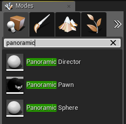
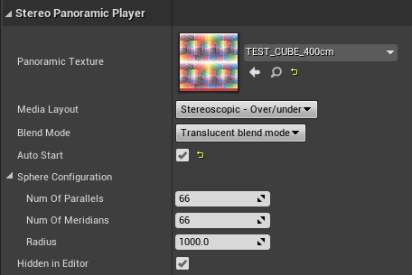

|
UE5 360 Stereo Panoramic Player 1.2.3
Create interactive Media Players and Virtual Tours for mono and stereo 360 panoramic images and videos in Unreal Engine 5.
|
Loading...
Searching...
No Matches
|
UE5 360 Stereo Panoramic Player 1.2.3
Create interactive Media Players and Virtual Tours for mono and stereo 360 panoramic images and videos in Unreal Engine 5.
|
Class APanoramicSphere is the low-level, basic actor to render and interact with a panoramic media. If you need a ready-to-use solution, supporting navigation between panoramic media out-of-the-box, check the Panoramic Director actor.
The main responsibility of APanoramicSphere is to render a sphere around the user's pawn, mapping the wanted panoramic media inside. In addition, it supports some transition effects and query methods for user interaction.
Differently from Panoramic Director, that's mostly autonomous and data driven, APanoramicSphere requires you to program it using Blueprints or C++.
You can import in your Unreal Engine 5 project all the panoramic media files (images and videos) you want to display. Alternatively, APanoramicSphere can work with any compliant UTexture generated at run-time (e.g. downloaded or procedurally generated). Please read the section Media Layout for details about the supported formats.
To start working with a APanoramicSphere actor, you can simply place an instance of the actor in your level: search for the class PanoramicSphere in Modes > Place panel and drag it into the level.

Alternatively you can dynamically spawn it:
SpawnActorfromClass() BP node;SpawnActor() methods.When you have an instance available, you can configure its properties (if your instance is in the level, you can select it and edit the properties directly in its Details panel).

Important: set the actor Location to (0, 0, 0).
You can press the PIE PLAY button and see the result in real-time.
When activated, the panoramic sphere will appear around the user pawn.
For a comprehensive list of available methods, please refer to the documentation of the class APanoramicSphere. Methods and properties are available both from C++ and Blueprint scripts.
You can programmatically show and hide the panoramic media calling the following methods:
When the flag APanoramicSphere::AutoStart is true, the method APanoramicSphere::Play() is automatically called on actor activation.
APanoramicSphere supports several customizable effects:
You can control the effects using the corresponding methods and properties defined in APanoramicSphere.
Note: the high level APanoramicDirector actor supports the use of UE5 Curve assets to tune transition effects out-of-the-box.
APanoramicSphere exposes few methods to support user interaction.
Through the APanoramicSphere::AttachWidget() method you can attach UE5 UMG Widgets to the panoramic scene, accurately positioning them. This is commonly used to place interactive hotspots. Read 'How to add custom interactive UMG widgets' for detailed instructions.
Calling APanoramicSphere::UVMap() you can convert a world space view vector to UV coordinates relatives to the panoramic media. This allows you to retrieve the pixel where the user is staring at the panoramic image.
The high level APanoramicDirector actor uses this method to manage the feature Navigation with a lookup texture.
The sphere used by APanoramicSphere to project and render the panoramic media is procedurally generated. You can customize its geometry to scale performances on low-end devices (eg mobile) or improve quality on high-end hardware. To do it, you can edit the number of parallels and meridians used to build the sphere geometry (see APanoramicSphere::SphereConfiguration). The number of triangles is equal to 2 * (NumOfParallels - 1) * (NumOfMeridians - 1).
Starting from Version 1.1.0, the plugin supports a new Opaque rendering mode: is more efficient to render (especially on low-end mobile devices) and it supports rendering custom 3D meshes inside the panoramic sphere out-of-the-box. This mode usually requires a special scene to be used, as objects in the surrounding 3D scene that overlap the panoramic sphere will appear inside it.
The default blend mode, ESphereBlendMode::Translucent, is more expensive to render but the resulting panoramic sphere can be drawn over any existing 3D scene (hiding it). Rendering of 3D objects inside the sphere requires a special setup (see 'How to render 3D objects inside the Panoramic Sphere').
You enable the Opaque rendering mode simply setting the BlendMode property to the value ESphereBlendMode::Opaque, before activating the panoramic actor. The BlendMode property is supported also by the APanoramicDirector class.
When using the Opaque rendering mode, you can render any 3D object inside the panoramic sphere simply ensuring its location and size are withing the ones of the panoramic sphere.
Note that, when in Opaque rendering mode, any scene element could "enter" the panoramic sphere if not explicitly avoided (e.g. hiding it or re-positioning it outside of the panoramic sphere). This could make difficult to blend this mode with generic 3D experiences.
Common issues when working with APanoramicSphere. Check 'How-to' for common how-tos.
Check that the APanoramicSphere actor is located at (0, 0, 0) and that property APanoramicSphere::PanoramicTexture is set correctly.
APanoramicSphere is a low level actor and knows only about the panoramic texture it has to render. If the texture to render is the target of a media player, it's your responsibility to start/stop the Media Player as needed.
APanoramicDirector is an higher-level class and is able to autonomously control the Media Player associated with a rendered texture.